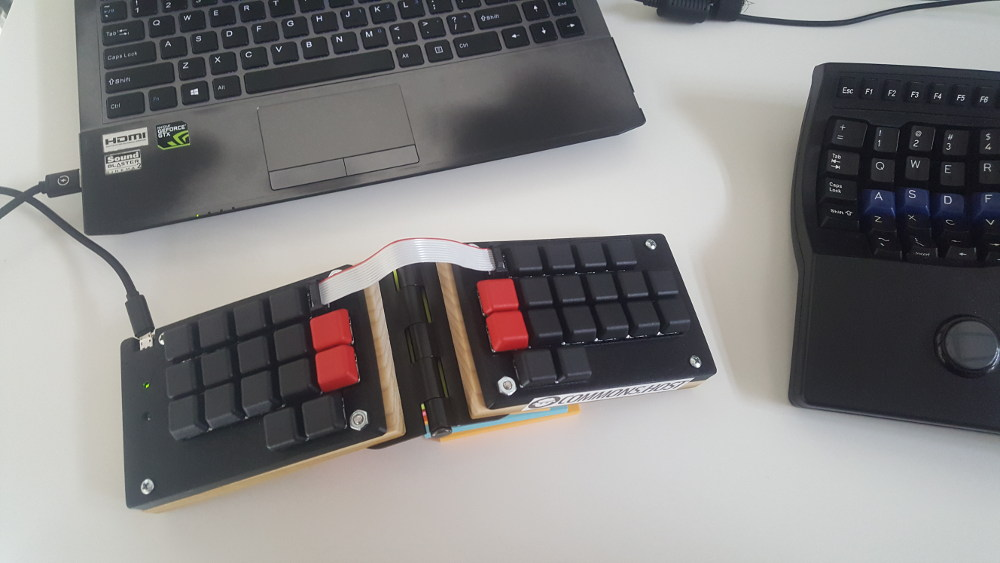

I got by typing by hunting and pecking keys at the start, and gradually it became more of a "muscle memory" in how I felt my way around to keys on any keyboard. One day, a colleague at work pointed out that since I do this for a living (coding) why I would not want to do it "properly" that I realized it was time for a (long overdue) change.
I started by Googling one of those courses online and got around to slowly doing drills. Then in the midst of that I learnt about the history of QWERTY and that alternatives like Dvorak and Colemak existed. I made the decision to jump right into Colemak and see how it would work for me. (tip: don't do this when you're in the mist of a crunch at work!)
I was also getting a bit of wrist pain and moved away from the staggered layout boards (goodbye Realforce) towards the split-tilt-ortholinear boards: in my case I ended up sticking with a Maltron and Kinesis Advantage. This was quite the exercise at that moment, juggling getting used to a new keyboard layout and learning to touch type properly. I think I was painfully getting through my sprints at work at a crawl - 15 to 20 wpm.
9 months later, typing in Colemak is pretty natural to me now, and I'm at a comfortable 80 to 85 wpm rate. Was learning to touch type properly worth it? Totally. I have not let up in my rate of typing at work, and the keyboards are themselves comfortable to work with (plus some DIY modifications I made). Some little things irk me ever so often: when I'm told to type something on someone else's keyboard, when I'm out and have to type on the laptop... but I can live with that.
Typing this out on my Stenomod still takes me longer than I like, and I find myself referring to the dictionary a bit too much. But it has been a lot of fun thus far. Going to update this when I get a bit more practice in.

<< back